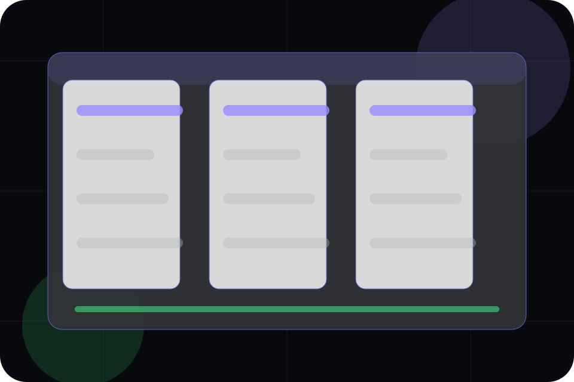

Context
Automation gives the page a specific angle instead of repeating the navigation label.
Features / 01
Features opens as a clear software decision hub: what Orbit offers, who it helps, why it matters, and which route to take first.
The first screen combines positioning, proof, primary action, and fast internal navigation, so people can act immediately or compare the rest of the features route with context.
App interface hero
Select the closest route and Orbit keeps the next step, proof, and follow-up expectation aligned with speed, clarity, and product confidence.

Features / 02
Automation adds technical context to the features route, using the dark product dashboard system structure to support speed, clarity, and product confidence before visitors choose a next step.
Orbit uses fine-line app cards and focused copy to make the decision easier to scan, aligning the section with speed, clarity, and product confidence rather than filling space.
Explore FeaturesAutomation gives the page a specific angle instead of repeating the navigation label.
The fine-line app cards show what to compare, what to avoid, and what matters most for software, saas platforms & digital products visitors.
The final cue points to a useful internal route so the section keeps the journey moving.
Features / 03
Reporting adds technical context to the features route, using the dark product dashboard system structure to support speed, clarity, and product confidence before visitors choose a next step.
Orbit uses fine-line app cards and focused copy to make the decision easier to scan, aligning the section with speed, clarity, and product confidence rather than filling space.
Explore FeaturesReporting gives the page a specific angle instead of repeating the navigation label.
The fine-line app cards show what to compare, what to avoid, and what matters most for software, saas platforms & digital products visitors.
The final cue points to a useful internal route so the section keeps the journey moving.
Features / 04
Collaboration adds technical context to the features route, using the dark product dashboard system structure to support speed, clarity, and product confidence before visitors choose a next step.
Orbit uses fine-line app cards and focused copy to make the decision easier to scan, aligning the section with speed, clarity, and product confidence rather than filling space.
Explore FeaturesCollaboration gives the page a specific angle instead of repeating the navigation label.
The fine-line app cards show what to compare, what to avoid, and what matters most for software, saas platforms & digital products visitors.
The final cue points to a useful internal route so the section keeps the journey moving.
Features / 06
Security gives the proof layer for features: standards, evidence, and reassurance that make the next decision feel grounded.
Instead of relying on vague claims, Orbit presents visible standards, process cues, and proof artifacts that help software visitors judge fit.
Explore FeaturesOrbit structures security around evidence, standard, and a clear next route so visitors can compare the block quickly before they schedule a demo.
Schedule DemoFeatures / 07
Comparison adds technical context to the features route, using the dark product dashboard system structure to support speed, clarity, and product confidence before visitors choose a next step.
Orbit uses fine-line app cards and focused copy to make the decision easier to scan, aligning the section with speed, clarity, and product confidence rather than filling space.
Explore FeaturesComparison gives the page a specific angle instead of repeating the navigation label.

The fine-line app cards show what to compare, what to avoid, and what matters most for software, saas platforms & digital products visitors.
The final cue points to a useful internal route so the section keeps the journey moving.
Features / 08
Details adds technical context to the features route, using the dark product dashboard system structure to support speed, clarity, and product confidence before visitors choose a next step.
Orbit uses fine-line app cards and focused copy to make the decision easier to scan, aligning the section with speed, clarity, and product confidence rather than filling space.
Explore FeaturesDetails gives the page a specific angle instead of repeating the navigation label.
Features / 09
Flexibility adds technical context to the features route, using the dark product dashboard system structure to support speed, clarity, and product confidence before visitors choose a next step.
Orbit uses fine-line app cards and focused copy to make the decision easier to scan, aligning the section with speed, clarity, and product confidence rather than filling space.
Explore FeaturesFlexibility gives the page a specific angle instead of repeating the navigation label.
The fine-line app cards show what to compare, what to avoid, and what matters most for software, saas platforms & digital products visitors.
The final cue points to a useful internal route so the section keeps the journey moving.
Features / 10
Orbit closes the features route with a clear action, a quick reminder of the value, and a low-friction way to schedule a demo.
Visitors who are ready can use the primary action. Visitors who are still comparing can scan the section links, proof, and support routes before they schedule a demo.
Schedule DemoThe final block keeps the choice simple: act now, compare one more proof route, or send enough detail for a focused response.
Schedule Demospeed, clarity, and product confidence
A product-led SaaS site with a dark dashboard hero, precise modules, issue-like cards, and calm product copy. Features ends with a direct path to schedule a demo, plus enough context for visitors who still need to compare.